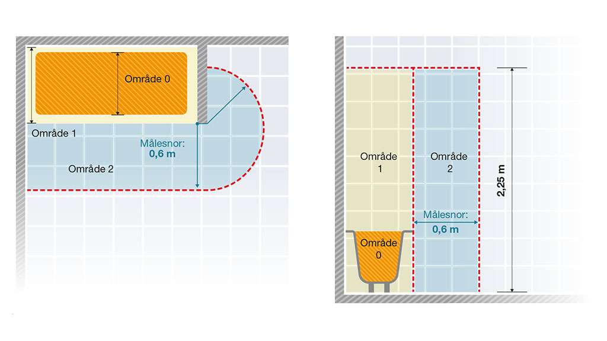
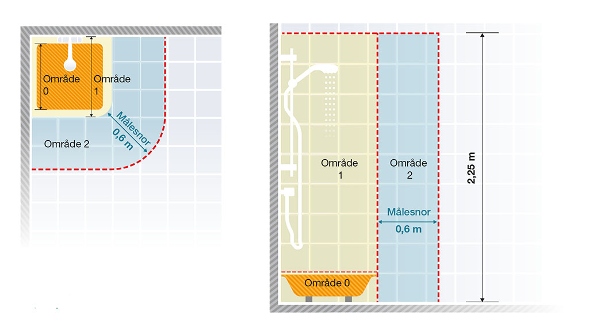
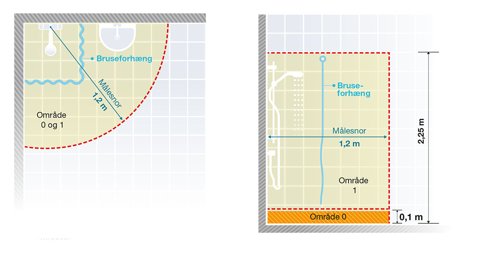
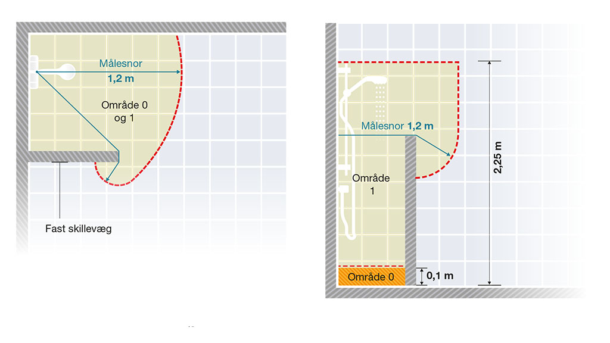
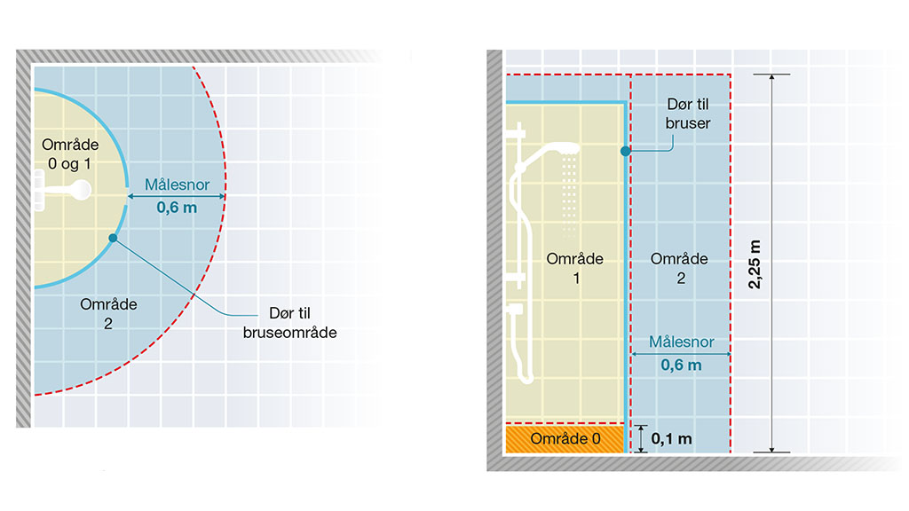
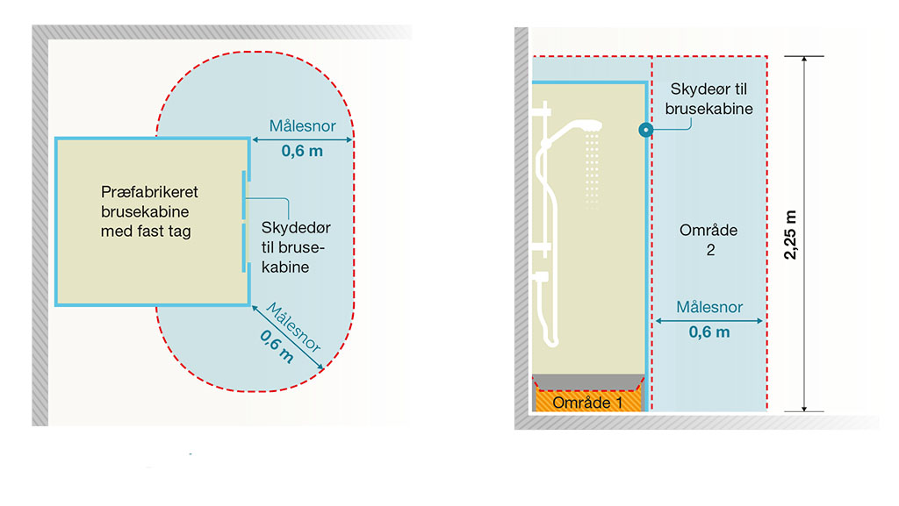
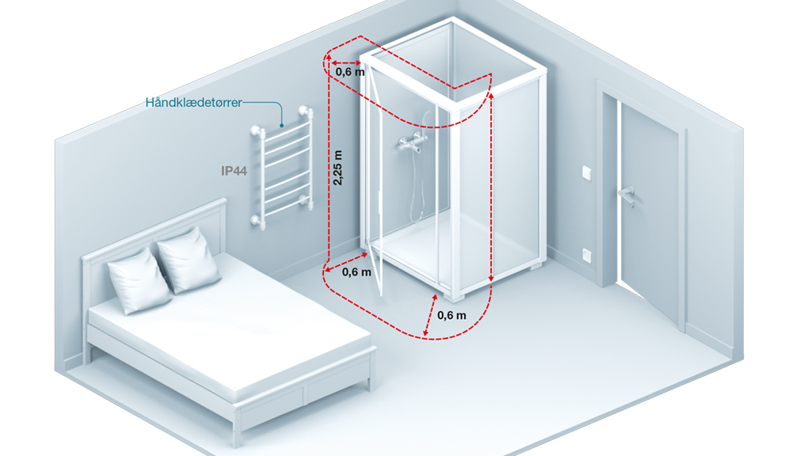

Elektriske installationer i badeværelser
Når du som installatør skal udføre elektriske installationer på badeværelser og andre områder med bad og bruser, er der en række krav, som du skal være opmærksom på. Her kan du læse mere om områdeopdeling, beskyttelsesforanstaltninger og ledningssystemer.
Der henvises til standarder i den nye installationsbekendtgørelse, som er trådt i kraft 1. juli 2017.
Læs mere om overgangsperioden mellem de nye og gamle regler.
Her gælder kravene
De særlige krav for elektriske installationer i områder med bad og bruser gælder for områder med fastmonteret bad (badekar) eller bruser samt de områder, der er omkring.
Kravene gælder ikke for anlæg til nødsituationer, fx nødbrusere i industriområder eller laboratorier. Områder med bad eller bruser til medicinsk behandling kan have særlige krav, som ikke bliver nærmere beskrevet her.
Præfabrikerede bade og bruseenheder
Præfabrikerede bade- eller bruserenheder skal overholde standarden DS/EN 60335-2-105, elektriske apparater til husholdningsbrug.
Præfabrikerede hele badeværelser skal overholde installationsbestemmelserne.
Områdeopdelinger i områder med bad og bruser
Når du skal lave elektriske installationer i områder med bad og bruser, skal du være opmærksom på reglerne for områdeopdeling.
Reglerne er nærmere beskrevet i standarden DS/HD 60364-7-701:2007 - krav til særlige installationer eller områder med bad og bruser.
I figurerne herunder kan du se eksempler på, hvordan du definerer områderne 0, 1 og 2. I stærkstrømsbekendtgørelsen afsnit 6 var område 3 også defineret. Dette område er nu faldet bort.
Sådan fastlægger du områderne
Hvis brusehovedet er fastmonteret, skal du gå ud fra placeringen af brusehovedet, når områderne bestemmes. Hvis der er monteret et brusehoved på en flexslange, skal du tage udgangspunkt i stedet, hvor flexslangen er koblet til den faste installation.
I figurene nedenunder kan du se, hvordan du laver områdeopdeling i forskellige situationer.
Figur 1: Områdeopdeling ved badekar

Figur 2: Områdeopdeling ved brusere med brusebassin

Figur 3: Områdeopdeling ved brusere uden brusebassin

Figur 4: Områdeopdeling ved brusere med fast skillevæg

Figur 5: Områdeopdeling ved brusere med foldbare døre

Hvis der er monteret flere brusehoveder, skal du lave områdebestemmelse for hvert enkelt brusehoved og så ’lægge dem oven på hinanden’.
Den samlede områdebestemmelse vil være det laveste områdenummer, der hvor områderne overlapper hinanden.
Opsætning af brusekabine i et andet rum, fx køkken eller soveværelse
Opstiller du en præ-fabrikeret brusekabine i et rum, der normalt bliver anvendt til andre formål (fx køkken, soveværelse eller kælder), skal du være opmærksom på, at området omkring brusekabinen ændrer karakter.
Du skal derfor lave en områdebestemmelse og sikre, at der ikke er elektriske installationer eller elektriske produkter i områder, hvor de ikke må være.
Fastlæggelsen af området bliver typisk som vist i figur 6.
Figur 6: Områdefastlæggelse for en brusekabine i et andet rum end badeværelset

Figur 7: Eksempel på brusekabine installeret i et soveværelse

I forhold til stærkstrømsbekendtgørelsens afsnit 6 er område 2 uændret (angivet som område 3 i stærkstrømsbekendtgørelsens afsnit 6), mens der er sket en skærpelse med indførelse af område 0 og 1, hvor der ikke må være almindelige elektriske installationer. Fx må der ikke være en panelstikkontakt under brusekabinen.
Regler om beskyttelsesforanstaltninger
De generelle regler om beskyttelsesforanstaltninger gælder. Det betyder, at du skal være opmærksom på, at det ikke er tilladt at lave:
- grundbeskyttelse ved hjælp af spærring
- grundbeskyttelse ved at placere udenfor rækkevidde
- ikke-ledende område
- beskyttelse ved lokal potentialudligning uden jordforbindelse
Du må kun udføre beskyttelse ved separat strømkreds for en enkelt stikkontakt eller for strømkredse, der forsyner et enkelt stykke materiel.
Denne beskyttelse er mest anvendt for stikkontaktudtag i belysningsarmatur, hvor der er en skilletransformer indbygget foran stikkontaktudtaget (typisk en shaver-stikkontakt).
Efter de nye installationsbestemmelser er det nu tilladt at anvende ekstra lav spænding ved PELV i områderne 0-2, hvilket ikke er tilladt i stærkstrømsbekendtgørelsens afsnit 6.
Ledningssystemer i badeværelser
Hvis kablerne fremfører strømkredse, der er beskyttet af en 30 mA RCD, så er der ingen yderligere krav til oplægning af kabler i badeværelser. Se DS/HD 60364-7-701:2007, krav til særlige installationer eller områder med og bruser, punkt 701.512.3C.
I de sjældne tilfælde, hvor kablerne ikke fremfører en strømkreds, der er beskyttet af en 30 mA RCD, skal du følge de specielle regler i standarden DS/HD 60364-7-701:2007, krav til særlige installationer eller områder med bad og bruser.
Er der tale om installation af koblingsudstyr og tilbehør, skal du tage hensyn til, om den resterende vægtykkelse er tilstrækkelig.
22. august 2017